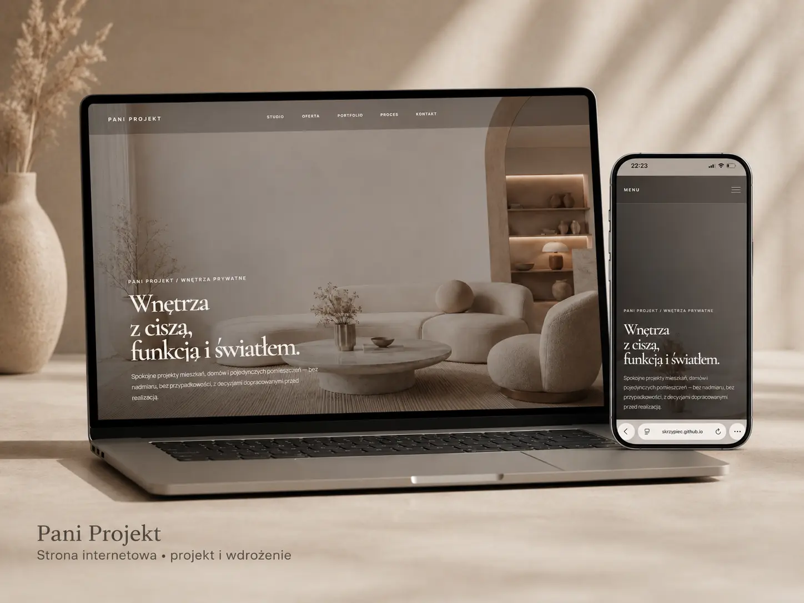

01 / 04Projektowanie wnętrz


REALIZACJA
Zobacz stronę ↗Pani Projekt
Spokojna, edytorialowa strona, która buduje zaufanie do studia przez jakość realizacji.
STRONY INTERNETOWE / ŚLĄSK
Projektujemy nowoczesne strony dla firm. Jasna oferta, mocny wygląd i wygodny mobile — wszystko prowadzi klienta do kontaktu.

01 / REALIZACJE
Każdą stronę projektujemy osobno dla dużego i małego ekranu. Poniżej prawdziwe realizacje, nie gotowe szablony.
Spokojna, edytorialowa strona, która buduje zaufanie do studia przez jakość realizacji.


Mocna prezentacja samochodów i detailingu z prostą drogą do oferty oraz telefonu.


Minimalistyczne portfolio premium, w którym to wnętrza pozostają najważniejsze.


Sprzedażowy landing page z lokalną ofertą, wyceną i komunikacją dopracowaną pod telefon.
02 / OFERTA
Każdy pakiet obejmuje indywidualny wygląd, responsywność i gotowe wdrożenie. Bez ukrytych kosztów.
Jedna mocna strona nastawiona na sprzedaż konkretnej usługi lub produktu.
Pełna strona firmowa, która porządkuje ofertę i buduje zaufanie do marki.
Strona firmowa z podstronami oraz przygotowaniem pod widoczność w Google.
Optymalizacja istniejącej strony: techniczne SEO, lokalne frazy, meta dane, sitemap i konfiguracja Google Search Console.
Zapytaj o SEO ↗03 / CZEMU 21PROJECT
Strona ma prosto tłumaczyć ofertę, budować zaufanie i ułatwiać kontakt. Każdy element ma konkretną pracę do wykonania.
Wygląd dopasowany do marki i branży, a nie kolejny gotowiec z podmienionym logo.
Widok telefonu projektujemy równolegle, bo właśnie tam większość klientów zobaczy stronę.
Od pomysłu do publikacji rozmawiasz z jedną osobą odpowiedzialną za cały efekt.
Szybkość, logiczna struktura i podstawy techniczne są uwzględnione już przy budowie.
04 / SEO I GOOGLE
Poza wyglądem możemy przygotować stronę pod lokalne wyszukiwania i podpiąć narzędzia Google. Poniżej przykład efektu działań przy stronie z branży projektowania wnętrz.

Przykład wyników projektu z branży wnętrzarskiej.
STRONY INTERNETOWE / LOKALNIE
Tworzymy strony internetowe dla firm z Rudy Śląskiej, Katowic, Chorzowa, Zabrza, Bytomia, Gliwic, Świętochłowic, Mikołowa, Tychów, Żor i okolic. Pracujemy również zdalnie z firmami z całej Polski.
05 / KONTAKT
Krótko opisz firmę i zakres strony. Otrzymasz konkretną odpowiedź oraz propozycję następnego kroku.